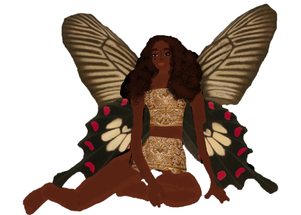

The water was so shallow they could stand, and it stretched on at that height for miles. They ran into the distance, out into the clouds. The entirety of the island from which they came had died with his anger that now was muted and overflown. They walked in reflection as if they were walking on a mirror, almost two worlds in parallel, where they could watch themselves below. The girl was shaken in happiness, sadness, anger and disgust, and her face lit up in the light. She felt strong and full, and it felt like a whole new internal universe separate from that of the form she was in. The boy really began to feel nothing, but he did feel love for the girl, a love so strong he would do anything for her.

She set fire to the sky, and it glazed in the colors of her mood, like the gem of a ring. He kissed the top of her head sending her off as she moved away, dancing in the shallow of the waves. They played together, he chased her like he did back in school. She ran away from him a match for speed, as she drowned in the pure fleeting joy that overtook her, the deep inner sadness, the acoustic of anger, and the clarity of disgust. It was overwhelming the intensity of it all, and so she kept running along the shore into the new shallow waters of nothingness, and out in the distance there was nothing they could see, as if the earth were to eventually drop off into the atmosphere. She giggled and he giggled to, but with a heavy breath, he couldn’t catch her anymore and he stopped to breathe, but his heart could chase her forever. He had begun to almost completely fade away, and his body began to take on a new finesse. And soon they came together and he melted the static rising through her body, he held her and they sat together, the water creeping up and rolling by, pushing and pulling away from them. She lit him a flame, everything she touched turned to sparks and he absorbed this, cooling her with the steadiness of his fallen hand. They just lay there, as their energies tore apart at each other, and they were so still, but together so violent inside.

In this island of theirs they remained preserved from the traditional structures of life, like bugs in amber. The boy didn’t have to go to school, and the girl didn’t know why she was here or there. They both embraced the emptiness, the uncertainty of what they were to do, but the boy had sudden fears. He had fears of what was to come, why he was there, and what the future could hold. But the girl calmed his fears. She gave him hope in a life he was meant to retain. They stopped searching and they had no purpose at all, except to feel the feelings they felt, and to be who they were going to be. Days passed round and around like clay spinning on a wheel that sculpted him from a man, and together they slipped through, like her feet against the slimy green moss that covered the rocks in the water. He picked at the fruit growing on the trees near the edges of the bank, and threw them down to her, as the violins spilt from her mouth every time they lay. The bushes that ate them and the endless escalation of their chests that could no longer stay on beat. They collected shells that came in and out with the tides, the pull washing them away, but he wouldn’t let go. She scraped her leg on an urchin, her blood spilling in the water, as it turned pink with the sky. The night, spreading his words like a spore, as he told her stories of adventures and journeys of everything she was and everything she could be. And when the sun rose in the morning the boy and girl awoke to the pattering trickle of the water falling down over the edge of a mountain, down and down she looked to see where the days would go, and she went tumbling through them faster.
Next